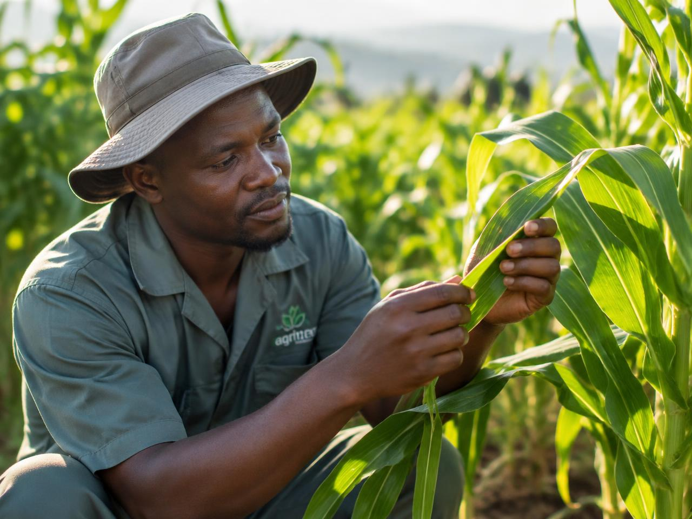

Detect Crop Diseases with AI
Upload or capture a crop image and get an AI-assisted disease prediction.

About
Crop Disease Detector helps farmers identify possible crop diseases from images using computer vision and deep learning.
AI Disease Detection
Analyze crop images using a trained deep learning model.
Image Processing
Images will be prepared using computer vision techniques.
Scan History
Farmers can keep track of previous crop scans.
How It Works
Capture or Upload
Take a crop photo or select an existing image.
Image Processing
The image is prepared for AI analysis.
AI Analysis
The trained crop disease model analyzes the image.
View Result
The system displays the predicted condition and confidence.
Supported Crops
Supported crops and disease classes will depend on the final trained dataset and model.
Ready to check your crop?
Create a free farmer account and start scanning leaves from your phone.
Create Account